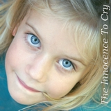
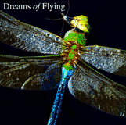
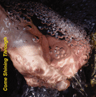
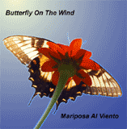

We Are All Of This (2007)
Original folk, traditional gospel, Russian and Chilean folk.
More...

The Innocence To Cry (2005)
Original folk, traditional gospel, Russian and Chilean folk.
More...

Dreams of Flying (2003)
Original folk, traditional gospel, Russian and Chilean folk. Debut of two wonderful young singers,
Maia and Sarah. Strong return performances from Cynthia, dandelion,
Jamuna (Russian folk in Russian), Claudia (Chilean folk in Spanish),
Jasmine, Ari, and the Omega Choir.
More...
Feel This Love (2002)
Feel This Love was created by Cynthia Rylander Crossen for healing through song.
These rounds, songs, and chants about love and connection hope to
inspire, enliven, comfort, and bring a sense of peace to the listener, to heal hurts,
illness, and fears.
More...

Come Shining Through (2001)
Original folk, international folk and traditional gospel.
Debut of Russian folksinger Jamuna (Russian folk in Russian), True Believers, Ari,
Beverly (gospel), and Jasmine. Strong return performances from Cynthia, dandelion,
and Claudia (Chilean folk in Spanish).
More...

Butterfly On The Wind (2000)
Original folk, Sakha (Siberian) and Chilean folk. Mother son duets with Cynthia and Jesse,
Janet, Claudia (Chilean folk in Spanish), John and Carmen, and Susie (Sakha folk in Sakha).
More...
The Goddess Suite (1987)
The Goddess Suite is a choral work for women's voices,
composed by Cynthia Crossen to celebrate the Greek goddesses.
More...